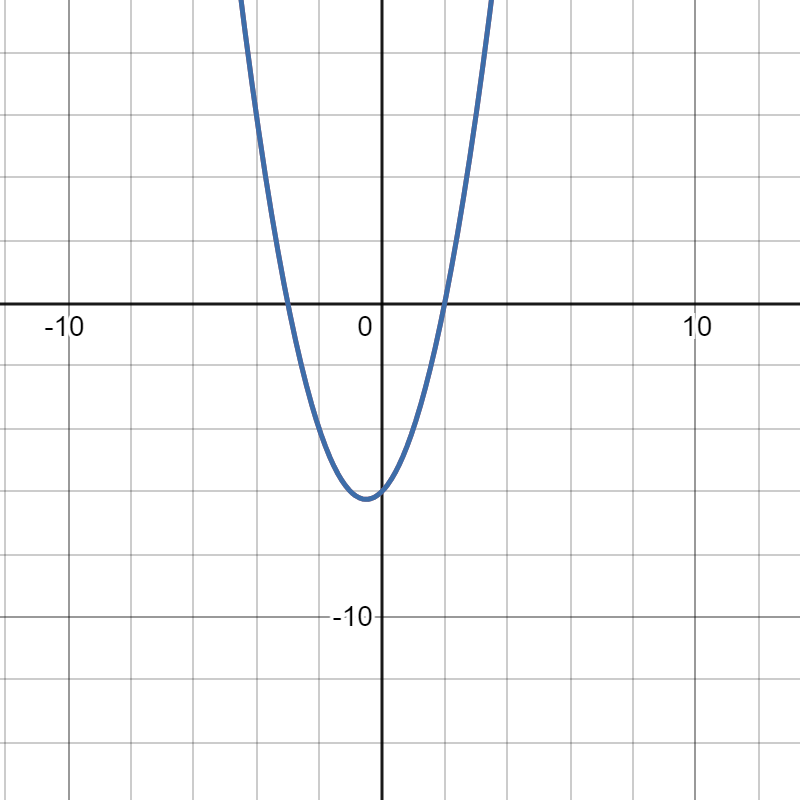

A parabola can be represented in 3 forms: vertex, standard, and factored.
Let's use the example of f(x) = x2+x-6.
This is standard form, and it can be converted to factored form by factoring.
f(x) = (x-2)(x+3) is it in factored form, and this is useful because it shows us the roots of the parabola(the values of x that make the function equal to 0).
Finally, f(x) = (x+1/2)2-6.25 is in vertex form.
This is useful because it gives the minimum or maximum of the function.
The form of a parabola in vertex form is f(x) = a(x-h)2+k.
To determine whether the parabola has a minimum value or a maximum value, we look at the value of a.
If the a value is negative, then the parabola is downwards facing and has a maximum value.
If it is positive, then the parabola is upwards facing and has a minimum value.
The coordinates of this minimum or maximum value are given by (h, k).
Be careful when analyzing parabolas, as the general form of a parabola shows -h.
Going back to our example, we can see that the parabola is upwards facing, and therefore has a minimum value. We can also see that the cooridnates of the minimum value are (-0.5, -6.25).
An graph of f(x) is shown below:

As can be seen, it is an upwards facing parabola with a minimum at (-0.5, -6.25).
Practice:
State whether each parabola is upwards facing or downwards facing, and the coordinates of their minimum or maximum point:
1. f(x)=-8(x-9)2
2. f(x)=-3(x+1)2-99
3. f(x)=(x)2+6.3
4. f(x)=7(x+4)2-2
5. f(x)=(x-77)2+7